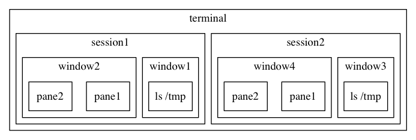

Tmux Crash Course
If you are still using multiple terminal’s tab to manage your shells, this post may give you a new point of view.
The power of Tmux are following:
- connect local or remote sessions
- powerful management of windows and panes
- move windows between difference sessions
- automate script

Config files
Like most dotfiles, the config file of Tmux local in $HOME/.tmux.conf with a global one in /etc/tmux.conf.
Prefix
First things first, prefix is the base of all the shortcuts, once the prefix is set, system knows that the following operation should be sent to to tmux.
the default prefix key is C-b, which conflict with emacs default keybinding, so you can set prefix as ‘C-a=like most user. Of course=C-t` is another popular choice.
Here are some config about prefix:
set -g prefix C-a # setting the prefix
unbind C-b # cancel the default prefix
set -s escape-time 1 # setting the escape time of prefix
bind C-a send-prefix # make sure C-a can be sent in other applications (like vim)
Common Operations
I will list my config in next sections. You may find that the description is longer than the config file since many shortcuts are the default ones so there is no need to define them explicitly.
Feel free to use prefix - ? whenever you want to lookup the shortcuts list
Session
config：
bind C-c new-session # create new session
bind C-f command-prompt -p find-session 'switch-client -t %%' # find session
| function | shortcut |
|---|---|
| new session | prefix - C-c |
| return session | tmux attach -t session-name |
| list sessions | tmux list-sessions |
| find session | prefix - C-f |
| rename session | tmux rename-seesion session-name |
| switch session | tmux switch -t session-name |
Window
config：
bind -r C-h previous-window # choose previous window
bind -r C-l next-window # choose previous window
| functions | shortcut |
|---|---|
| new window | prefix-c |
| close window | prefix-& |
| rename window | =prefix-,= |
| list windows | prefix-w |
| switch window | prefix-[0-9] |
Panel
config：
bind - splitw -v
bind | splitw -h
| function | shortcut |
|---|---|
| horizontal split window | prefix - ǀ |
| vertical split window | prefix - - |
| maximum pane | prefix-z |
| change pane layout | prefix-space |
| resize pane | prefix and hold (shift)FBNP |
| switch pane in turn | prefix - o |
| switch pane by no | prefix - q with no |
Mode
Like vim, tmux has it’s own modes.
default mode
Once you enter Tmux, you are in default mode.
copy mode
use prefix-[ to enter copy mode。In this mode you can lookup history, copy and past text just like the normal mode of vi.
command mode
Directly invoke command just like press M-x in emacs.
clock mode
This mode will show a clock. To be honest, I do not find this mode any helpful.
Advanced tips and plugins
Pair Programming
Did you ever feeling it’s too crowded if two programmers head are behind one monitor? Tmux to the rescue. Start a server, and every programmer use a client to connect to the server, not only share a screen, but also share same file if the file is on server.
Since it’s a common patten, there’s already a tool named wemux, which support modes such as mirror, pair, rogue even with the ability of kicking.
Initial workspaces
Thinking about a project which needs a redis server with two ports, a sidekiq process besides common server such as mysql, es and guard, that’s horrible.
Thanks to tmuxinator which is a ruby gem making initialing these servers very easy. It can also automate opening text editor, prepare extra windows for git or other tools and so on.
plugin manager and theme customize
The plugin system of tmux is very simple. You can install tpm to getting started. You can also checkout this repo which listing many tmux themes.